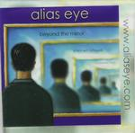

Home Artist links

| Artist: | Alias Eye |
| Title: | Beyond The Mirror |
| Label: | self produced |
| Length(s): | 16 minutes |
| Year(s) of release: | 2000 |
| Month of review: | 10/2000 |
Line up
Vytas Lemke - keyboards
Philip Griffiths - vocals
Matthias Richter - guitars
Frank Fischer - bass
Ludig Benedek - drums
Tracks
| 1) | River Running | 6.20
|
| 2) | Premortal Dance | 5.19
|
| 3) | An End In Itself | 4.54
|
Summary
A young German band that according to themselves incorporate influences
of Pink Floyd, Spock's Beard and the Beatles as well as classical influences.
This is their debut, a mini album.
The music
Well the Spock's Beard influences are obvious in operner River Running, in the
keyboard run to be precise. The vocals are okay, but maybe a bit on the
uneventful side. The harmonies are okay, but recording/productionwise the band
can still grow. I really like how the vocal melody develops before we return
to the catchy Beardish keyboard run and the classical piano intermezzo with
variations on the good vocal melody. The bluesy guitar work afterwards is too
much Spock's Beard. The compostion holds a certain promise (except for the
Beard epigonism), but I do hope that the optimism of the track can be captured
in more enthousiastic form. On Premortal Dance the vocals of Griffiths are first
slightly warped and the music is now more in a ballad style. Later the vocals
become normal again and the song also has some percussive elements where the
music is more paced. Past halfway organ, bass and military drums are the portent
of a change in the track. The guitar takes control here. The drumming is a bit
flat here, and I hope that next time the band will have a bit more flash and
drive in their sound. Closer is An End In Itself has some Beatles influences
in the keyboards. Later on we get melodic progressive with again carefully
crafted vocal melodies. Unfortunately the music lacks that bit of power, the
band strikes me as being a bit too friendly.
Conclusion
In three not overly long tracks Alias Eye shows itself as a new face on the
scene of melodic progressive rock. Some of the influences, SB in the first
track, are too obvious and it is hoped the band can get rid of these. The style
of music can be compared to the Dutch band Triangle, although Triangle for
instance introduces the necessary bombast into their music. In this respect
Alias Eye has good compositions and especially good melodies (for some maybe
a bit too mellow, but I like them), but the music could sound a bit more dynamic
and louder next time. Now it is a bit too calm overall.
© Jurriaan Hage